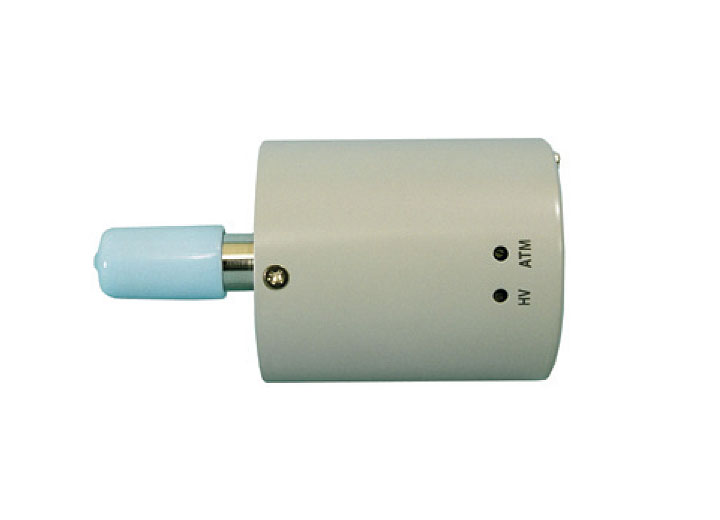

| Sensor Part | |
| Service ambient temperature | 0 to 40℃ |
| Color | Munsell value N-6.5 |
| Exterior Dimension | Φ63 X 120L |
| Vacuum connection | Φ15, option-NW 16 |
| Connector shape | 9-pins D-SUB connector |
| Circuit Part | ||
| Measuring method | constant temperature system | |
| Measuring range | 1.0 X 106 to 5.0 X 10-1 Pa | |
| Pressure resolving power | System | 4-20mA |
| Load resistance | 400Ω or less | |
| wire-breaking signal output | System | open collector |
| Output logic | normal/close, open(option) | |
| Rating | DC 30V / 50mA | |
| Option | set-point : 2 points independent | |
| Power voltage | DC 12 to 15, 24V | |
| Current consumption | 150mA | |